[main]Shuo Wu's Website
[main]Shuo Wu's Website
 [main]Shuo Wu's Website
[main]Shuo Wu's Website
Regret analysis is broadly adopted in learning with online interactions. However, why using regret minimization instead of cost minimization as in other learning tasks such as batch learning? In this short note, we will give an example that by minimizing the regret, the learner gets a better reward.
Consider the function 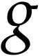 defined as 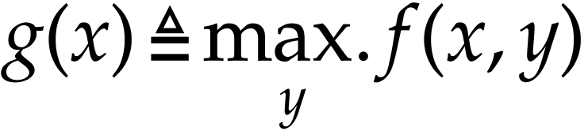, where 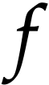 is an arbitrary function. The optimization problem defined as
| 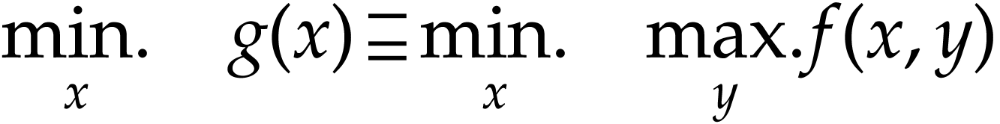 | (1) |
can be viewed as a worst-case optimization problem, and 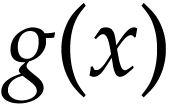 is called worst-case cost.
Let's consider a scenario where we have 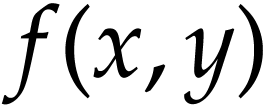 that represents the time required to drive a car from one location to another given policy 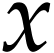 and environment 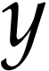. In this context, represents the driver's driving pattern, which encompass decisions like adjusting speed, selecting lanes (left or right), and other driving strategies. On the other hand, represents a binary condition indicating whether it's currently raining (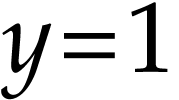) or not (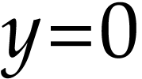). Together, this function captures how the driver's decisions and weather conditions collectively impact the time it takes for the journey.
It's a widely acknowledged fact that driving takes more time on days when it's raining. Thus, 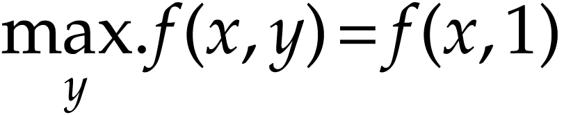. By definition, the function currently represents the time required for driving on rainy days.
Now, define 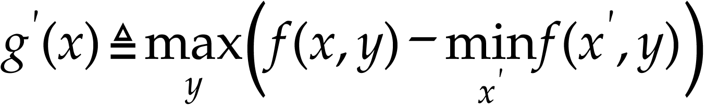. We call 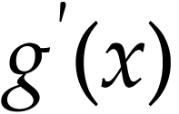 the worst-case regret cost. Unlike worst-case cost, the regret cost measures the maximum achievement it can be improved in the past days. For example, if a driver cannot drive in the rainy day due to rheumatoid arthritis. Then there is no difference between 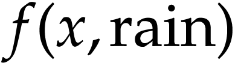 and 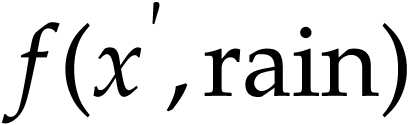 for any and 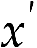, which makes 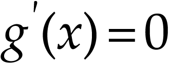. No regret at all! Because nothing can be improved in the worst-case.
Consider the function as follows:
The worst-case cost in this example is 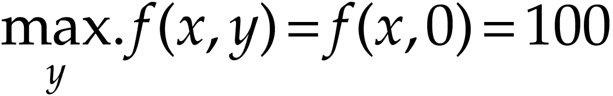 for any . Thus,
| 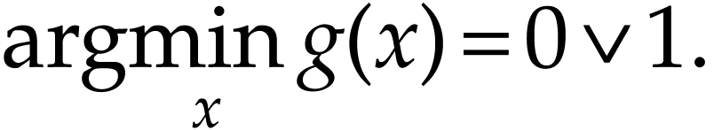 | (2) |
But for the worst-case regret cost, 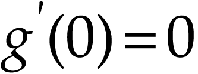 and 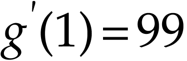. Thus
| 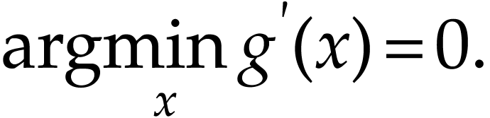 | (3) |
The fundamental assumption of standard offline machine learning is that the collected data are independently and identically distributed, stemming from an unknown distribution [2]. However, this assumption can be easily compromised in the realm of online learning [1]. For instance, let's reconsider a scenario involving a driver who refrains from driving on rainy days. In this case, data points (representing the time taken to travel between places) within a one-hour time-frame might have a probability of collection as low as 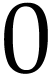. Conversely, data points beyond one hour might possess a probability of collection greater than . This implies that data collected on different dates adhere to distinct distributions. This distinction underscores a crucial difference between traditional offline learning and online learning.